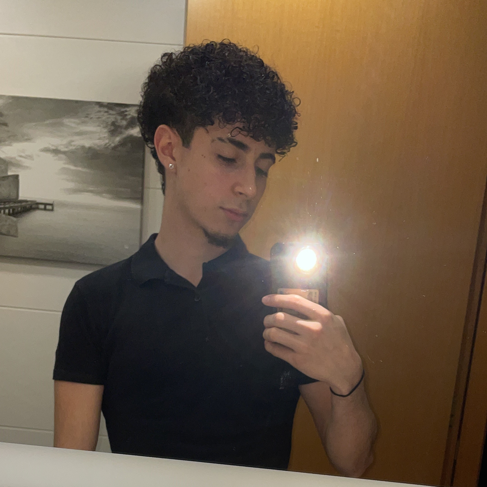

¿Quien soy?
Me llamo Àlex Bueno Viñuales, ahora mismo estoy estudiando en la universidad ENTI-UB, un CFGS-ASIX (Cicle Formatiu de Grau Superior - Administració de sistemas microinformatics y xarxes) especializado en ciberseguridad . Tengo 18 años y soy de Barcelona, concretamente del barrio de Sants. Soy una persona que le gusta mucho el mundo de los ordenadores y la informatica, que durante el ultimo año ha despertado un interes por la ciberseguridad y todos sus campos relacionados.
